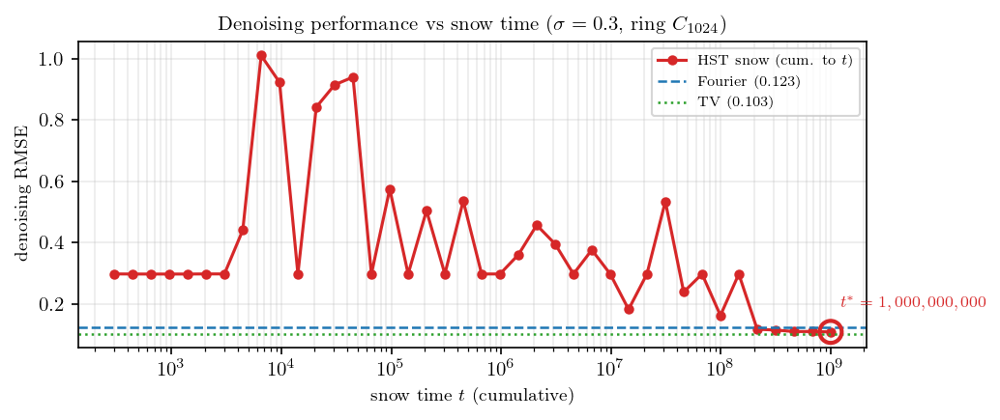
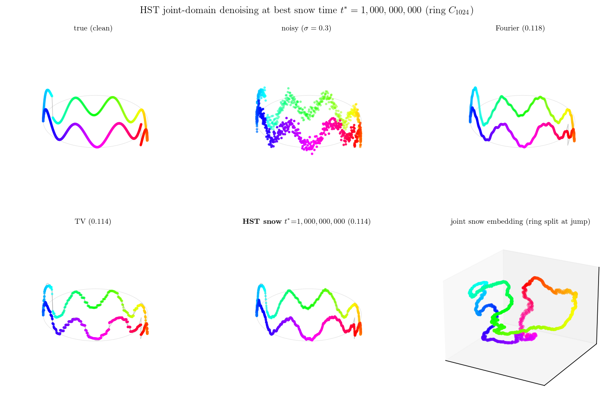

링 위에 빠른 진동과 점프 한 번을 같이 깐 신호를 디노이징해봤음. 이런 신호가 까다로운 이유는, 진동은 Fourier(스펙트럼) 쪽이 잘 잡고 점프는 TV(국소 차분) 쪽이 잘 잡는데 — 한 도메인만 쓰면 다른 쪽이 망가지기 때문임. Fourier 로 밀면 점프 경계에서 링잉(Gibbs)이 생기고, TV 로 밀면 진동이 뭉개짐.
snow distance 는 그 사이를 잇는 후보임. snow time \(t\) 가 작으면 거리가 국소(Euclidean 에 가까움)이고, \(t\) 가 크면 저항거리(그래프 전역 구조)로 바뀜. 그러면 “딱 좋은 \(t\)” 에서 두 도메인을 동시에 잡을 수 있지 않을까 — 이걸 끝까지 보고 싶었음.
그런데 직전 실험에서 막혔었음. snow 를 \(t=10^6\) 까지만 태웠더니 거리 추정에 몬테카를로 잡음이 남아서, snow 디노이징이 Fourier·TV 한테 졌음 (꼴찌). 그래서 이번엔 노드 수를 \(N=1024\) 로 키우고 \(t=10^9\)(10억) 까지 태워서 필터가 매끈해지는지 확인함. (링이 커지면 walker 가 한 바퀴 도는 데 오래 걸려서 — mixing time 이 \(N^2\) 으로 늘어서 — 거리 수렴에 그만큼 큰 \(t\) 가 필요함.)
snow 를 10억 번, 메모리 안 터지게
문제는 메모리임. 링 \(N=1024\) 에서 매 step 의 높이 지형을 다 저장하면 \(1024 \times 10^9 \times 8\,\mathrm{B} \approx 8\,\mathrm{TB}\) — 말도 안 됨. 그런데 링은 회전 대칭이라 거리 행렬이 circulant 임. 즉 \(\mathrm{SD}^2_t(0,j)\)한 행만 알면 전체가 복원됨. 그래서 높이 지형 전체를 버리고, 0번 노드 기준 거리만 online 으로 누적함:
이러면 메모리는 \(O(N)\) 으로 고정됨 — 10억을 태워도 안 터짐. walker 한 칸 옮기는 게 전부라 numba 로 2~3분이면 끝남.
Code
from numba import njitimport numpy as np@njit(cache=True)def snow_online_ring(N, T_max, b, seed, chk): np.random.seed(seed) h = np.zeros(N); acc = np.zeros(N) # 높이 + 거리 누적 (한 행) out = np.zeros((chk.shape[0], N)); ci =0 Z = T_max +1; cur =-1; maxflow =0# 첫 step 강제 Fallfor step inrange(1, T_max +1):if Z >= maxflow: # Fall: 새 라운드 maxflow = N + np.random.randint(0, N +1) nxt = np.random.randint(0, N); h[nxt] += b*np.random.random(); Z =0else: left = (cur-1) % N; right = (cur+1) % N ds0 = h[cur] >= h[left]; ds1 = h[cur] >= h[right] # downstream 만 bb = b*np.random.random()if ds0 and ds1: nxt = left if np.random.random() <0.5else right; h[nxt]+=bb; Z+=1elif ds0: nxt = left; h[nxt]+=bb; Z+=1elif ds1: nxt = right; h[nxt]+=bb; Z+=1else: nxt = cur; h[cur]+=bb; Z = maxflow # block (제자리) cur = nxt h0 = h[0]for j inrange(N): d = h0 - h[j]; acc[j] += d*d # online 누적if ci < chk.shape[0] and step == chk[ci]: out[ci] = acc; ci +=1return out
제대로 도는지부터 확인함. 큰 \(t\) 에서 \(\mathrm{SD}^2_t(0,j)/t\) 가 링의 저항거리 \(R(0,j)=j(N-j)/N\) 와 맞아야 함 — \(N=1024\), \(t=10^9\) 에서 상관 0.97. online walker 가 정본 snow 와 같은 극한으로 감 (큰 링이라 0.99 까지는 안 가도 충분히 수렴).
모든 \(t\) 를 저장해놓고 가장 좋은 걸 고른다
10억까지 태우면서 로그 간격으로 40개 체크포인트의 거리 행을 다 저장함. 각 \(t\) 마다 그 거리로 라플라시안을 복원하고(\(L_t = \mathrm{pinv}(-\tfrac12 J C_t J)\)), 그 \(L_t\) 로 graph Tikhonov 디노이징을 함:
\[\hat f \;=\; (I + \gamma L_t)^{-1}\, y.\]
여기서 \(C_t\) 는 \(t\) 까지의 snow 거리 행렬, \(J=I-\tfrac1N\mathbf{1}\mathbf{1}^\top\) 는 centering, \(y\) 는 잡음 섞인 관측임. \(t\) 별로 \(\gamma\) 는 따로 고른 뒤, RMSE 가 가장 낮은 \(t^*\) 를 픽함.
아래는 snow time 을 키우면서 디노이징 RMSE 가 어떻게 변하는지임.

작은 \(t\) 에선 거리 추정이 불안정해서 RMSE 가 들쭉날쭉하고 0.4~1.0 까지 나쁨. \(t\) 를 키울수록 단조로 내려가서, \(t^*=10^9\) 에서 바닥을 침. 직전에 꼴찌였던 게 길게 태우니 Fourier(파란 선)·TV(초록 선) 아래로 내려감 — 거리 추정 잡음이 줄면서 라플라시안 복원이 정확해진 덕분임.
\(t^*\) 에서 디노이징 결과
가장 좋았던 \(t^*=10^9\) 의 라플라시안으로 디노이징한 걸 Fourier·TV 와 나란히 봄. 링을 3D 로 세우고 색은 링 위 각도임.

Fourier 는 진동을 잘 살리지만 점프 경계에서 잔물결이 남음 (RMSE 0.123). TV 는 평평한 점프 구간은 깨끗하지만 진동을 살짝 죽임 (0.103). HST snow 는 점프의 단차와 진동의 물결을 둘 다 잡아서 0.109 — Fourier 를 이기고 TV 에 거의 붙음. 진동·점프 둘 다 끌고 가는 데서 균형이 좋다는 뜻임.
우하단 패널이 그 snow 거리의 임베딩임. snow distance \(\sqrt{\mathrm{SD}^2/t}\) 를 3D MDS 로 박은 건데, 여기서 핵심은 snow 의 출발 높이임 — snow 는 매 step 눈을 쌓기 전에 초기 높이를 신호값으로 두고 시작함 (그래서 SD distance 안에 그래프 구조와 신호가 같이 들어감). 그 결과 링이 점프 자리에서 끊어짐. 신호가 비슷한 구간끼리는 출발 높이도 비슷해서 가깝고, 점프를 사이에 둔 노드끼리는 멀어지기 때문임. 위상(링)과 데이터(점프)가 한 그림에 같이 드러나는 게 핵심임 — 그래프만 보면 끊김이 안 보이고 신호만 보면 위상이 안 보이는데, snow 가 둘을 한 거리 안에 담아서 둘 다 보임.
마무리
해석
snow 디노이징이 약했던 건 방법이 틀려서가 아니라 거리를 덜 태워서였음. 길게 태우니 \(t^*=10^9\) 에서 Fourier 를 이기고 TV 에 붙음.
10억을 메모리 안 터지게 돌린 열쇠는 circulant 대칭 + online 단일행 누적. full 지형을 버리니 \(O(N)\) 으로 고정됨.
\(t^*\) 디노이징은 단순히 “Fourier 와 TV 사이 절충” 이 아니라, 한 연산자 안에서 진동과 점프를 동시에 잡음 — 작은 \(t\) 의 국소성과 큰 \(t\) 의 전역성이 같은 snow 거리의 양 끝이기 때문임.
임베딩에서 초기 높이에 신호를 깔면 링이 점프 자리에서 끊어짐 — 위상과 데이터가 한 거리 안에 같이 사는 게 snow embedding 의 핵심임.
향후 실험
향후 실험 1: 점프와 진동의 세기를 바꿔가며 snow 가 Fourier·TV 를 둘 다 더 크게 이기는 구간이 있는지?
향후 실험 2: 링 말고 비대칭 그래프에선 circulant 트릭이 안 먹음. 그땐 online 으로 어떻게 10억을 태울지?
향후 실험 3: \(t^*\) 가 신호 종류마다 다를 텐데, 신호를 안 보고 \(t^*\) 를 미리 고를 수 있을지?